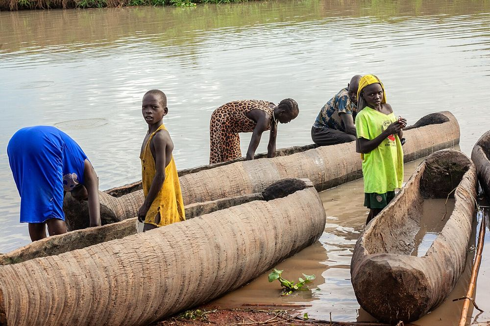
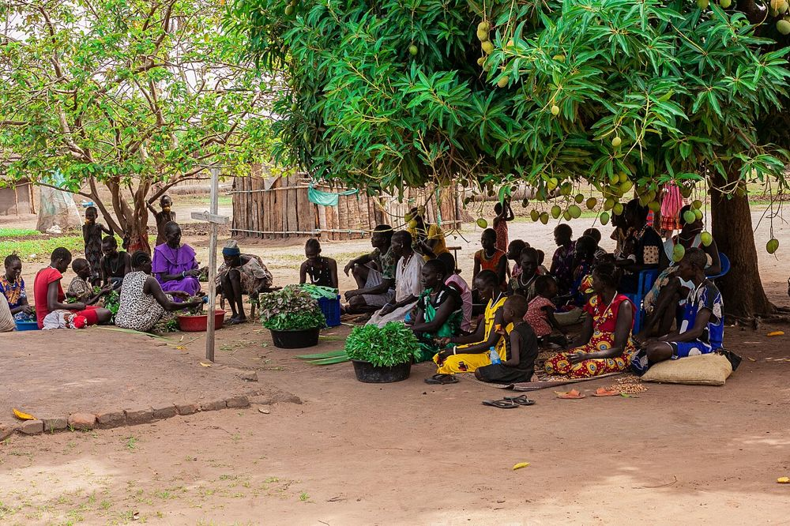
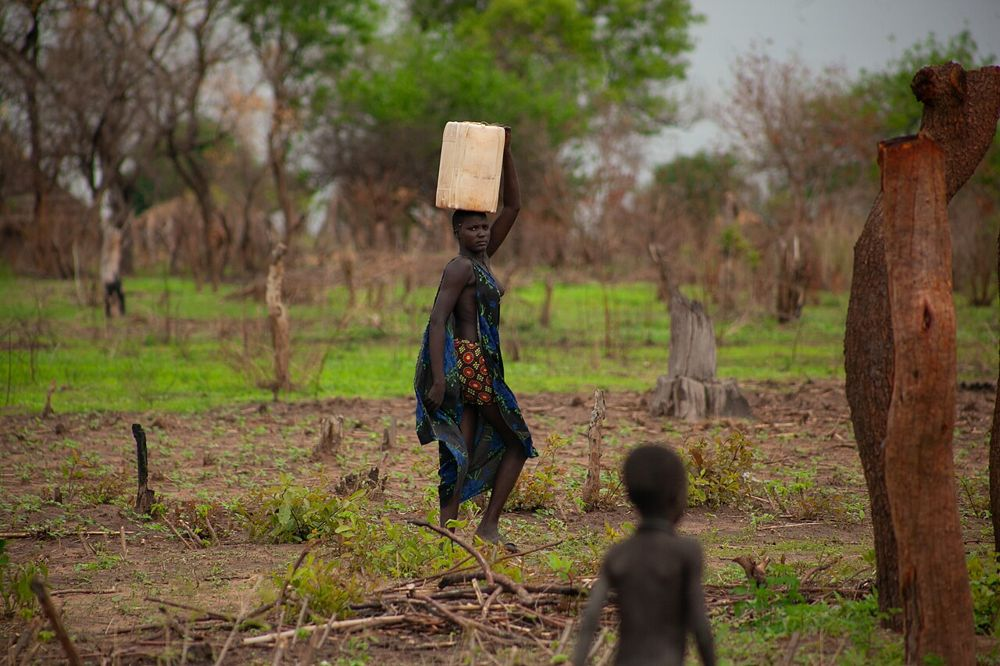
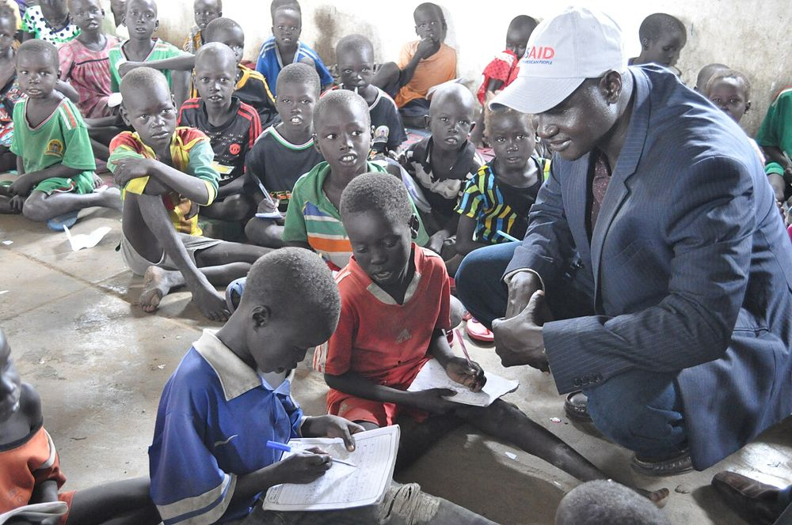
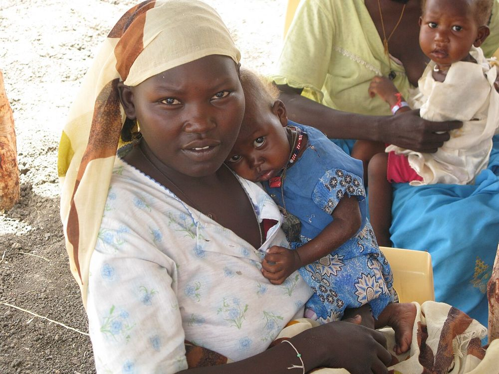
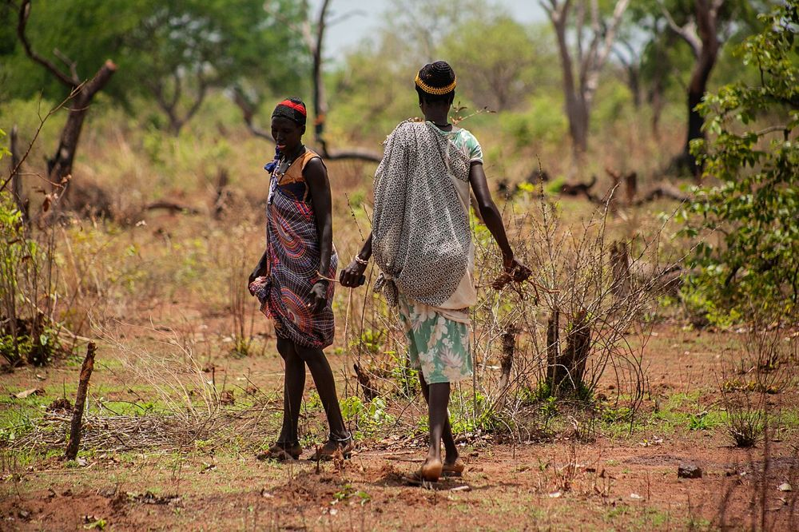
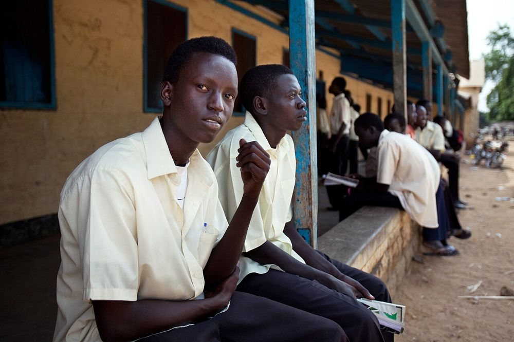
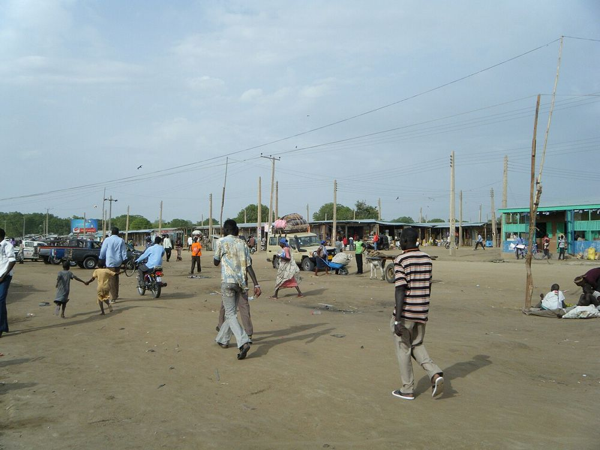

Livelihoods & savings groups
Village savings, small business and farming support.
120savings groups

Women hold South Sudanese families together through war, floods and hunger, yet they are rarely at the table when decisions are made. WIRCO was founded by women to change that. We work alongside women and girls so that they can earn, learn, heal and lead, and so that their communities become stronger and more peaceful.

Four connected programs that help women and their families withstand shocks and build a future of their own.
Village savings, small business and farming support.

Women mediators and peace committees in villages.

Keeping girls in school and teaching young women practical trades.

Support for survivors of violence, and maternal and child health.
Every number is a woman who now earns her own income, a girl back in a classroom, or a village where disputes are settled by talking instead of fighting.
See the storiesWhether you are in Juba or abroad, there is a way to stand with the women of South Sudan.
Help us finish what we started. Every gift moves a campaign closer to its goal.

Drill and repair boreholes so girls spend their mornings in class, not on long walks for water.

Training in tailoring, solar and phone repair, and business skills, with a start-up kit for every graduate.

Fees, uniforms, books and dignity kits so displaced girls can return to the classroom.
When you invest in a woman, she invests in her children, her neighbours and her village.
Voices from the communities we serve.
"Our savings group gave me my first loan. Today my tea stall pays my children's school fees."Achol N.Savings group member, Bor
"Before, the women only listened. Now the chief asks the peace committee to help settle disputes."Mary L.Peace committee chair, Torit
"I left school when the floods came. WIRCO paid my fees and now I am in Senior Three."Nyakuoth K.Student, Malakal
"I learned to repair solar lamps and phones. The whole market brings their work to me."Rose A.Skills graduate, Juba
"They listened to us first and then built the program with us. That is why it works."Josephine D.Community leader, Yei

We don't come and go. We stay with communities through every season, and we hand leadership to the women who live there.
Women's groups choose their own priorities, manage their own funds and track their own progress.
Climate-smart farming, savings and skills help families recover faster from the next flood or drought.
Updates from the field, written with the women and girls we work with.

A women's cooperative is planting drought-tolerant crops on communal land.
Read more
Mentors and family outreach are cutting dropout rates in partner schools.
Read more
Savings group members are moving from selling at the roadside to running permanent stalls.
Read moreCan't find what you're looking for? Write to us and our team will reply.
Contact usWIRCO stands for Women-Led Initiative for Resilient Communities. We are a South Sudanese organisation run by women, working for peace, livelihoods, education and protection.
We work with communities in several states of South Sudan, focusing on areas affected by conflict, flooding and displacement. Contact us for a current list of program locations.
Donations fund community programs: savings groups, school support, skills training, peace dialogues and emergency relief. We publish an annual report so you can see where funds go.
Yes. When you give, tell us which program or campaign you want to support and we will direct your gift there.
We welcome partnerships with NGOs, UN agencies, government, faith groups and businesses. Email us with your idea and we will set up a conversation.
Your support helps a woman earn, a girl learn and a community heal.
Donate now